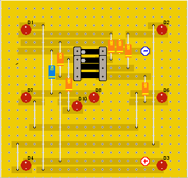
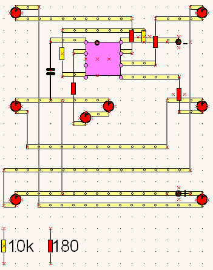
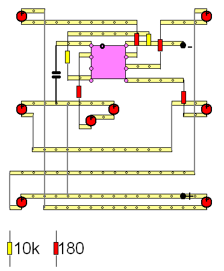
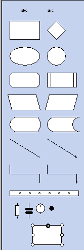

may, 2005
VeroBoard Design
Introduction
Veroboard Design
This is a first attempt to create vero-board (or perfboard) design with Diagram Designer.
The circuit is a rolling dice, created around a 12F675 PIC.
Here how the design looks with LochMaster.
The trial version didn't contain a 8-DIP IC, therefore 2* 6-DIPS are placed on top of each other.

And here's the design with Diagram Designer,
layer-2 contains the copper traces and layer-3 contains the components and wires.
View is 200%, layer-3.

And in preview mode (200%)

Components for VeroBoard
The components added to the flowchart object.
Selecting the components from the templates is quiet difficult, because they seems to overlap.
Width of the DIP-IC is still too large.
A very nice feature of Diagram Designer, is that you only need 1 IC-shape, because you can simply change it's size (the IC-pins have an absolute value).
